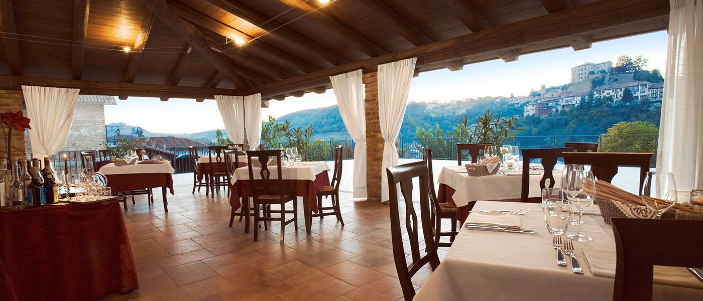
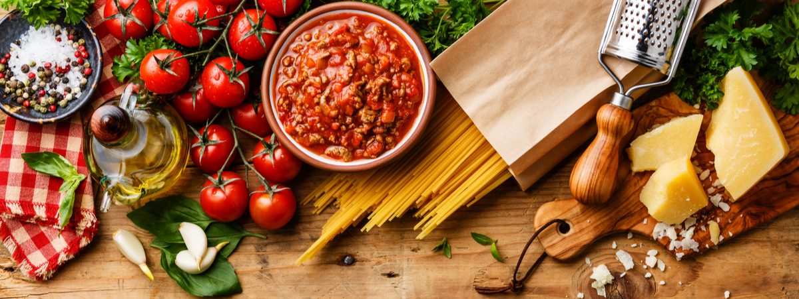

Chi siamo
Il ristorante Popolis nasce nel 2004 come piccolo agriturismo, dalla passione dei due
proprietari che ancora oggi dopo 18 anni servono ai propri clienti che scelgono il loro
ristorante piatti tipici della tradizione ma anche piatti innovativi ideati da loro.

I nostri prodotti
Tutti i nostri piatti sono creati con ingredienti a Km 0, la maggior parte degli
ingredienti vengono coltivati direttamente da noi e gli altri sono acquistati da produttori
locali che li trattano e producono in modo 100% BIO.
